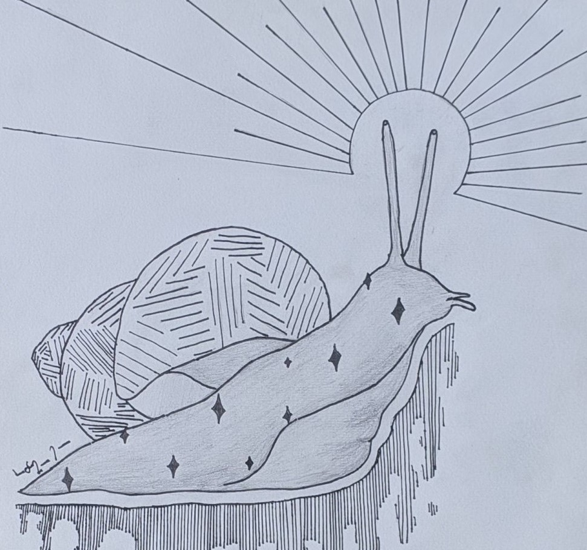
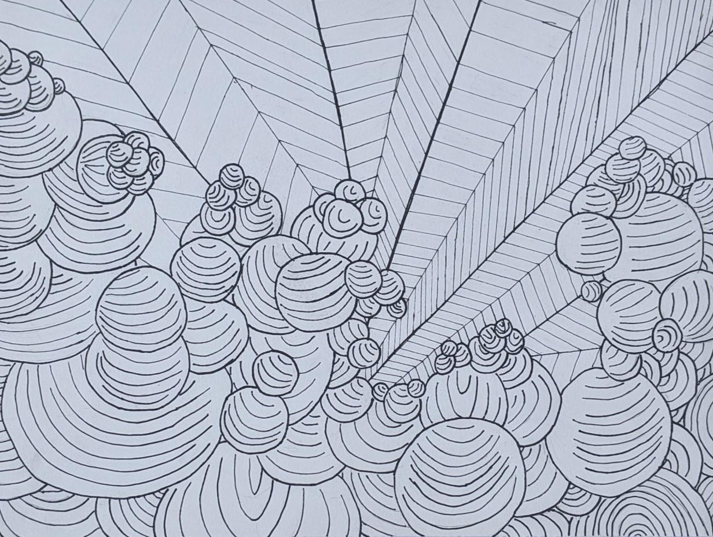
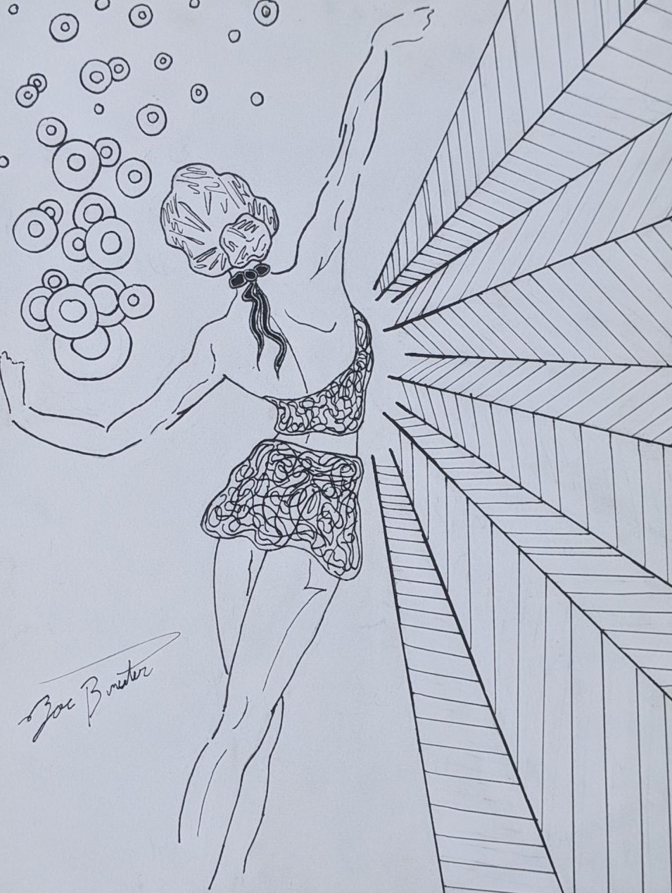
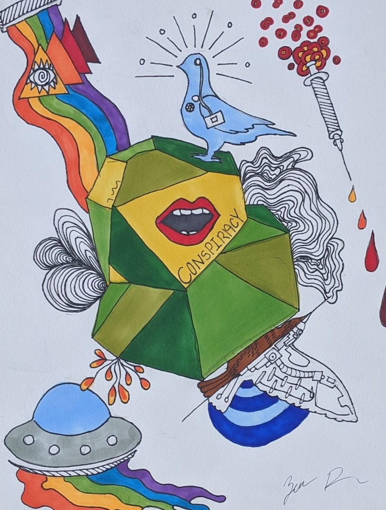
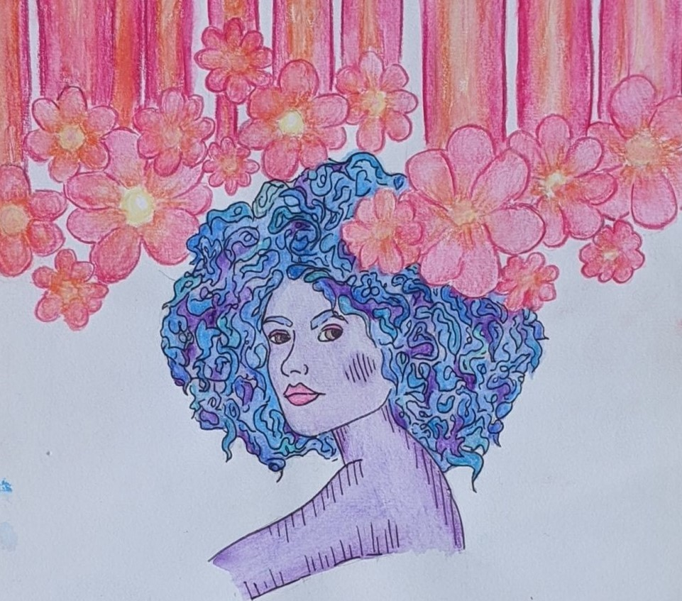
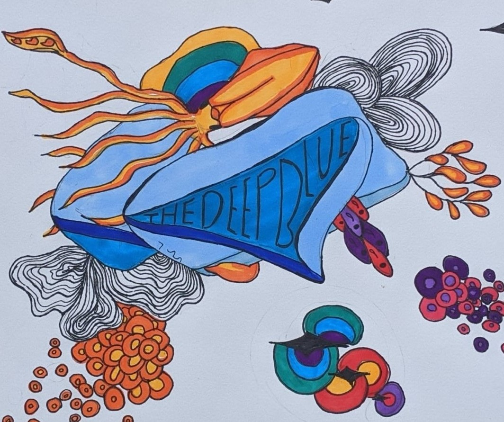

“Divine Escargot” (8.5 x 12 – ink pen on paper – 2019)
An otherwise normal snail posseses divine affinities. Heavy use of line elements to create texture, shape, and value.

“Clouds of Grandeur” (8.5 x 12 – black ink on paper – 2019)
Bubbly abstract of cloudy horizon. Heavy use of line element to create texture, shape, and value.

“Grace” (8.5 x 12 – ink pen on paper – 2019)
A dramatic dancer displaying rays of confidence and bubbles of happiness. Heavy use of line elements to create texture, shape, and value.

“Conspiring Conspirators Creating Conspiracy” (8.5 x 12 – ink pen and alcohol marker on paper – 2019)
Are the theories of manipulation true or are they themselves manipulations to cause us to conspire.

“Drippin Flowers for the Aesthetic” (8.5 x 12 – Black ink, colored pencils, and watercolor on paper – 2018)
The calm spring vibes from raining flowers.

“Unknowings of the Deep Blue” (8.5 x 12 – black ink and alcohol markers on paper – 2019)
How much do we really comprehend of the ocean.

“Clouds of Grandeur” (8.5 x 12 – black ink on paper – 2019)
Bubbly abstract of cloudy horizon. Heavy use of line element to create texture, shape, and value.